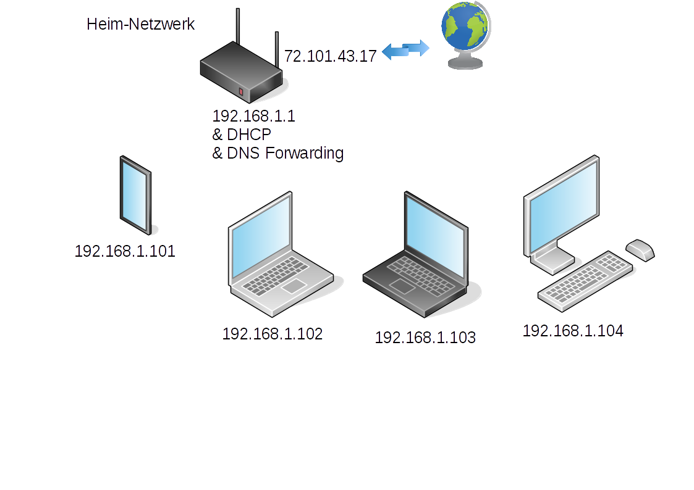
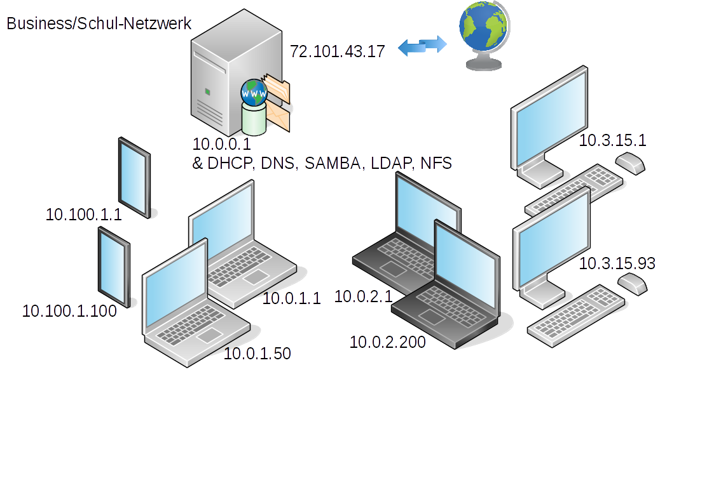

NETWORKBOX
BIETET AN:
einen automatisch installierten Server mit folgenden Diensten: DHCP, DNS, TFTP, PROXY, LAUS, OWNCLOUD
plus
zentral verwalteten Clients mittels LAUS = L(inux) A(utomatic) U(pdate) S(ystem)
für:
- kleine Heimnetzwerke
- mittlere Netzwerke in Schule & Büro
- Lern- & Testumgebung
NETWORKBOX
ERWARTET VON:
| ANFÄNGERN: | NORMALEN USERN: | POWER USERN: |
| ausprobieren | download | Scripts lesen |
| Fehler machen und daraus lernen | config | Scripts verstehen |
| weiter experimentieren | use :-) | eigene Scripts schreiben |
NETWORKBOX
NETWORKBOX
NETWORKBOX

NETWORKBOX
Installation des Servers/der Serverdienste:
auf einem normalen Debian/Ubuntu Server mit einem root-fähigen User einloggen und folgende Befehle ausführen:
>> git clone http://github.com/edvapp/networkbox>> mc- im File networkbox/OPTIONS.conf
- GLOBAL NETWORK - settings
- hostname & IP
>> cd networkbox>> sudo ./install.sh
NETWORKBOX
Installation des Servers/der Serverdienste:
Funktionsweise am Bsp. DHCP-Server Nr. 1:
Im File networkbox/dhcp/install-dhcp.sh werden im wesentlichen 3 Befehle ausgeführt:
apt-get -y install isc-dhcp-server/bin/bash change-etc_default_isc-dhcp-server.sh/bin/bash write-etc_dhcp_dhcpd.conf.sh
SYNTAX:
change-etc_default_isc-dhcp-server.sh ändert Datei etc/default/isc-dhcp-server
Folgerung:
Änderungen können reativ einfach nachvollzogen werden
=> NETWORKBOX = Lernumgebung
NETWORKBOX
Installation des Servers/der Serverdienste:
Funktionsweise am Bsp. DHCP-Server Nr. 2:
Im File networkbox/dhcp/change-etc_default_isc-dhcp-server.sh wird die aktive Netzwerkschnittstelle eruiert und im File etc/default/isc-dhcp-server aktiviert.
FIRST_ACTIVE_INTERFACE=$(ip link | grep "UP mode" | awk '{print $2}' | sed 's/://' | head -1)ACTIVE_INTERFACES=$(ip link | grep "UP mode" | awk '{print $2}' | sed 's/://')DHCP_INTERFACES=$FIRST_ACTIVE_INTERFACEsed -e "{ /INTERFACES=\"\"/ s/INTERFACES=\"\"/INTERFACES=\"$DHCP_INTERFACES\"/}" -i $file
NETWORKBOX
Installation des Servers/der Serverdienste:
Funktionsweise am Bsp. DHCP-Server Nr. 3:
Im File networkbox/dhcp/ch/bin/bash write-etc_dhcp_dhcpd.conf.sh
wird die eigendliche Konfigurationsdatei des dhcpd geschrieben.
NETWORKBOX
Installation eines Clients:
Client in Virtualbox anlegen:
in Virtualbox einen Client mit mit folgenden Einstellungen anlegen:
- 32 Bit
- 500MB Hauptspeicher
- 20GB Platte
- System/Bootreihenfolge/Netzwerk als ersten Punkt
- Netzwerk/Adapter an internes Netz anschließen
- Netzwerk/AdapterMAC = 0000 0000 0001 umbenennen
PFSENSE umstellen:
Der Snapshot des PFSENSE muss von "mit DHCP" auf "ohne DHCP" geändert werden!
NETWORKBOX
Installation eines Clients:
Netboot:
| CLIENT | DHCP | DNS | TFTP |
| getNetworkInfo(MAC) -----> | IP & Netzwerkeinstellungen <----- next-server tftp01 |
||
| getIPfor(tftp01) ----> | 192.168.1.1 | ||
| getBootMenu() -----> | menu.cfg | ||
| getKernel(Benutzerauswahl) -----> | kernel = 14.04/amd64/linux <-----preseed_2P_1F.cfg |
NETWORKBOX
Installation eines Clients:
Automatische Konfiguration mit Hilfe des preseed.cfg Files:
- d-i debian-installer/locale string de_AT
- d-i keyboard-configuration/layoutcode string de
- ...
- d-i preseed/late_command string <= Zeiträuber
tftp -l /target/etc/default/laus-setup -r preseed/laus-setup -g tftp01;
tftp -l /target/usr/local/sbin/laus-client.sh -r preseed/systemd/laus-client.sh -g tftp01;
tftp -l /target/lib/systemd/system/laus.service -r preseed/systemd/laus.service -g tftp01;
chmod 755 /target/usr/local/sbin/laus-client.sh;
chroot /target /bin/ln -s /lib/systemd/system/laus.service /etc/systemd/system/multi-user.target.wants/laus.service
NETWORKBOX
Installation eines Clients:
L(inux)A(utomatic)U(date)S(ystem) = LAUS :-)
Ziel:
viele verschiedene Clients sollen auf folgende Art verwaltet werden
- einfach => nur 2 Skripte bilden die Basis
- zentrale Verwaltung am Server => alle Arbeit findet am LAUS-Sever statt
- nachvollziehbar => alle Änderungen sind durch Skripte dokumentiert
- dokumentiert/archiviert => alles in Skripten nachlesbar
NETWORKBOX
Installation eines Clients:
L(inux)A(utomatic)U(date)S(ystem) = LAUS :-)
Funktionsweise:
| LAUS - CLIENT | LAUS - SERVER |
| laus.service (NFS mount) ----> | |
| <----- NFS - Freigabe autoinstall | |
|
in Freigabe /opt/autoinstall
|
NETWORKBOX
Installation eines Clients:
L(inux) A(utomatic) U(date) S(ystem) = LAUS :-)
Ein eigens LAUS - Skript erstellen:
Es soll nun ein eigenes Skript erstellt werden, das eine einfache grafische Oberfläche an den Clients nachinstalliert.
Die Konsolenbefehle >> apt-get install openbox xinit müssen nur als Shell - File an der richtigen Stelle abgespeichert werden.
- am LAUS-Server = networkbox in das richtige Verzeichnis wechseln:
>> cd /opt/autoinstall/laus/scriptsForClasses/NETWORKBOX
- File anlegen & ausführbar machen:
>> sudo touch 050-installOpenbox.sh
>> sudo chmod 755 050-installOpenbox.sh - Midnightcommander als root öffnen und 050-installOpenbox.sh mit F4 öffnen
>> sudo mc - File mit folgendem Inhalt befüllen:
#!/bin/bash
apt-get update
apt-get -y install openbox xinit(Hinweis: -y = ohne Rückfrage)
- mittels Midnightcommanderüberprüfen, ob dem Client im File
/opt/autoinstall/laus/hostsToClasses
in der Form
r001pc01:NETWORKBOX
die Skripte im Verzeichnis NETWORKBOX zugewiesen sind. - Client neu starten